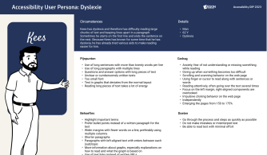
User Segment
- Dyslexia (N=2)
- Low Literacy (N=2)
- Low Digital Skills (N=2)
Aegon · 2024
How we redesigned Aegon's pension payout calculator to help elderly users make confident financial choices without panic.
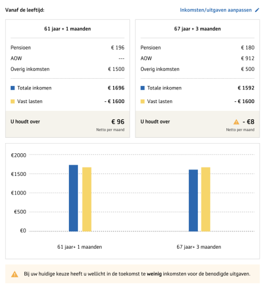
Impact
The project transformed a fast but confusing quotation journey into an experience that supported better decision-making while meeting Aegon’s goal of increasing meaningful quotation downloads. Research showed that while customers could generate a quotation quickly, many reached the end without fully understanding their pension choices. The focus shifted from simply helping people move faster to helping them make informed decisions with confidence.
More users completing pension choices
Higher offer download rate
I led the end-to-end design process, from research and strategy to testing and delivery. Working with cross-functional teams, I aligned business goals with user needs through evidence-led design and continuous validation. The result was not only a clearer and more accessible pension experience, but also a stronger UX culture where design and business decisions were grounded in evidence, stakeholders shared a common understanding of user problems, and customer confidence became a key measure of success alongside business outcomes.
Challenge
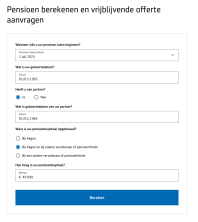
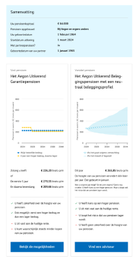
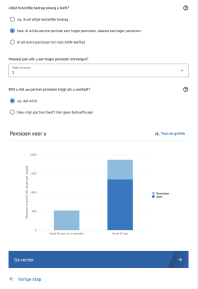
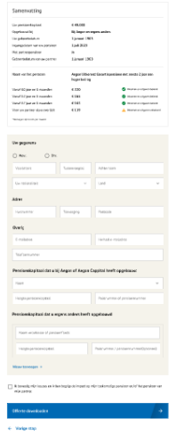
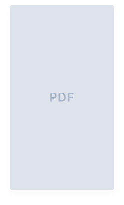
Primary Research
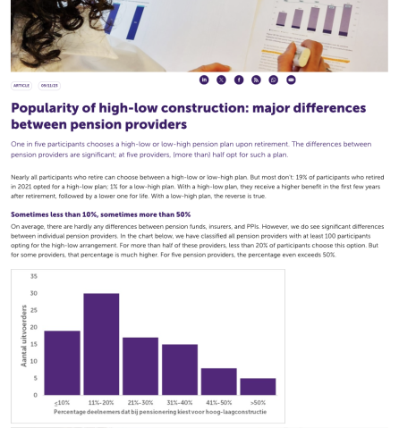
Source: Autoriteit Financiële Markten (AFM)
of people don't regularly check and understand their pension situation.
of people choose the high-low option, despite every insurer offering this option.
Most prefer fixed because of certainty and easier long-term planning.
Most want pension fund to reflect their future plans to reduce their anxiety.
Secondary Research
Conducted 11 in-depth interviews (ages 60-65), with 6 dedicated to accessibility users. I also mapped other subjective assessments: comprehension, trust and usability.

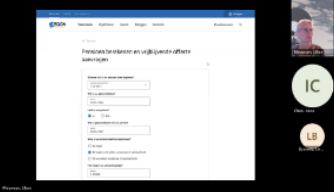
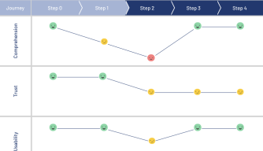
I also examined other subjective assessments, specifically trust and usability.
Competitor Analysis
I also mapped out competitors to help me and the team understand what the industry is providing to users, what are the design patterns, and where the opportunities and threats are. One key insight that emerged from this was the importance of a "personal touch."
| "Quick" estimation | |||||
| Scenario modeling | |||||
| Retirement income planner | |||||
| Built-in decision-support flow | |||||
| Data visualization | |||||
| Personal touch |
How might we make the pension decision process stress-free?
Anxiety & OverwhelmedHow might we make their choice certain?
Outcome AssuranceHow might we encourage people to be active during the process?
Behavior ChangeConceptualization
Synthesizing raw research into actionable design principles. Our approach focuses on high-trust financial interactions through psychological safety and cognitive clarity. From there, I started mapping out the features and interactions that would truly matter.
01
Use self-provided data to personalize outcomes
02
Slow down at key moments to provide emotional safety
03
Show how the choice shape future income to motivate to play around
To help users make major life decisions, I led the effort to turn complex financial data into clear, actionable insights. In designing our income calculator, we shifted the focus from backend calculations to actual user comprehension. Our research revealed that users wanted to see how gross and net numbers directly impacted their future, requiring us to integrate real-life factors like partner income and dynamic spending. This initiative ultimately aligned our engineering and product teams around solving meaningful user challenges.
When I joined, our analytics tools captured what users were doing, but lacked the qualitative context of why. To bridge this gap, I established a qualitative research framework that translated user motivations into actionable product strategy, uncovering key friction points hidden behind the quantitative data. To turn these insights into immediate product action, I spearheaded a dedicated task force comprising PM, Designer, Engineer, and Marketing. This initiative not only aligned user pain points directly with our strategic roadmap prioritization but also established a collaborative, scalable foundation for a research-driven design practice in the team.
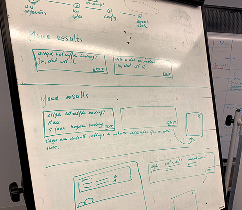
Technical Feasibility
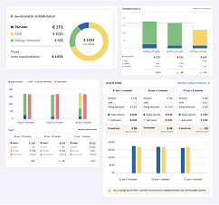
Go Messy
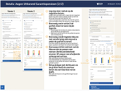
Test and Test
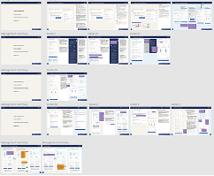
Stakeholder Buy-in
Solution
As an optional tool, it appears during payout method setup to minimize disruption and provide support at the moment it is most relevant
Key Highlights
The tool is introduced through an overlay that preserves the user's context and progress while capturing attention and communicating key information.
Clear titles and action-oriented buttons drive quick comprehension.
User Intent
"Will I have enough income in the future?"
Primary Button
Check whether my choice fits my situation
By guiding users through easily understandable milestones (such as current age, government retirement age, current savings, and expected monthly expenses), we lowered the cognitive barrier to entry. Users were able to instantly visualize their "financial gap" or surplus in real-time.
Key Highlights
Groups questions by life stage so context builds naturally as users move through the flow.
Concise phrasing reduces cognitive load for users who may already feel overwhelmed.
Live calculations keep users in one place instead of bouncing to a separate tool.
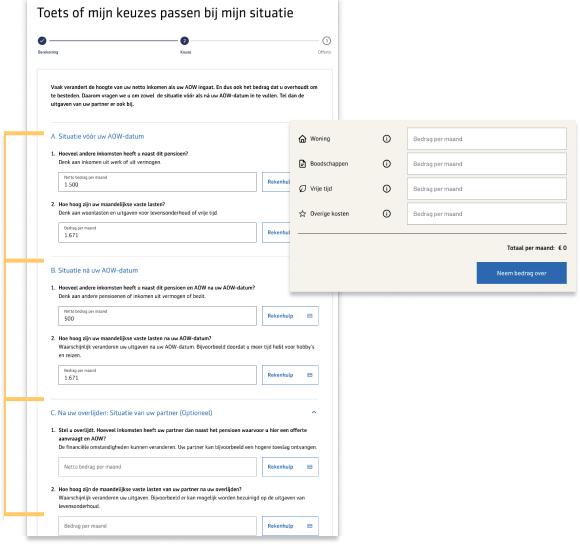
After answering the questions, users are taken to the next page, where they can see how their choices affect their future pension income. Their inputs are organized into familiar categories, making it easy to understand how each decision contributes to the final outcome.
Key Highlights
Outcomes are shown in the same calculator language users already recognize.
Numbers and visuals live side by side so no one has to choose a preferred format.
Two life stages sit next to each other so trade-offs are easy to spot.
A visible warning flags scenarios where income may fall short later on.
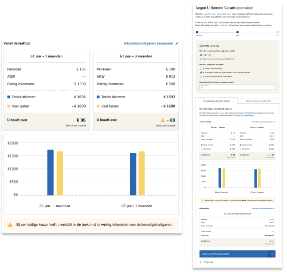